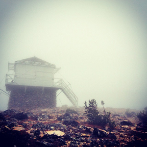
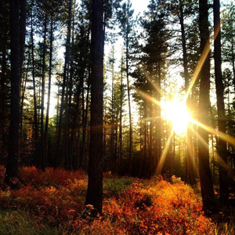

Hiking in Missoula means endless mountain trails, views of the valley and paths leading to hidden wonders that are just begging to be discovered. Wildlife and beautiful scenery are just a couple of the things that you will find hidden away in Missoula's surrounding mountains.
Wildlife and beautiful scenery are just a couple of the things that you will find hidden away in Missoula's surrounding mountains.
From the top of Mount Sentinel to the top of Snowbowl, Missoula offers plenty of hiking options and ranges. It would be impossible to give credit to each every must-do trail in the Missoula Valley. There are simply too many choices. Here are a few suggestions to get you started.

